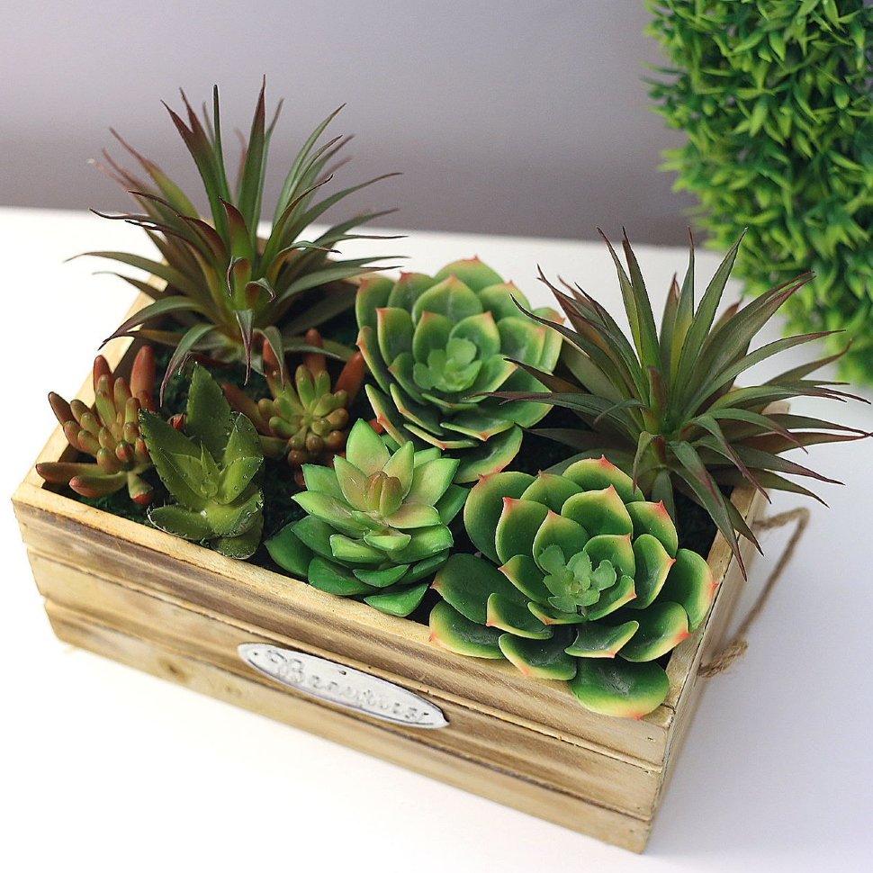
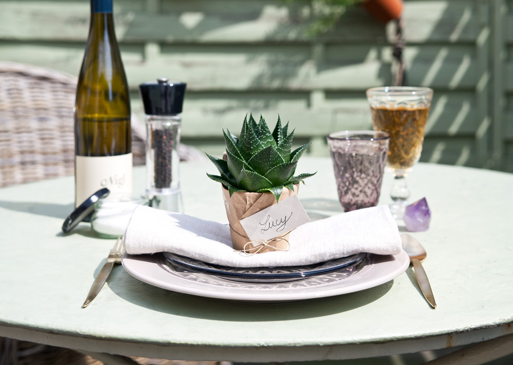
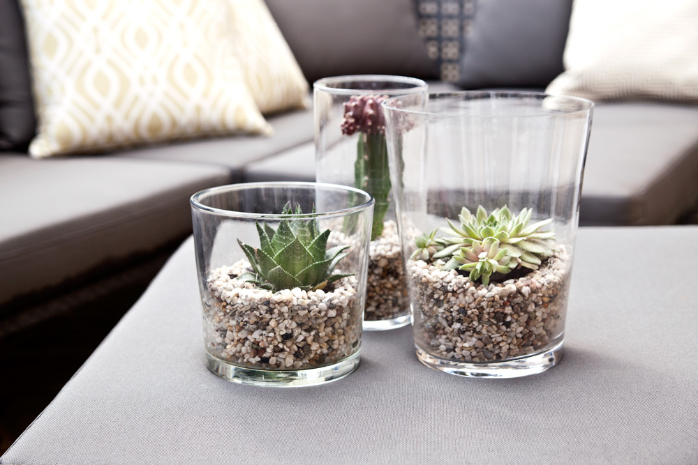

Основные характеристики: мясистая, длинная, заостренная к концу листва скомбинирована в двухрядную сжатую розетку. Кстати, к стеблевым суккулентам относится большинство кактусов. Главное преимущество этих растений заключается в том, что они произрастают в самых засушливых районах мира, поэтому их нужно поливать только раз в две недели. Как с помощью суккулентов можно украсить свой дом, мы расскажем и покажем в этой статье.
-
Стиль 1: Деревенский
Прекрасной альтернативой классическим букетам при украшении стола, сервированного в деревенском стиле, станут суккуленты. Такое украшение можно создать очень быстро, оно долговечно и добавит экзотические нотки в общую атмосферу. Возьмите небольшой деревянный ящик и проверьте, сколько маленьких кашпо с суккулентами в него поместится. Лучше использовать разные типы суккулентов, так они будут смотреться интереснее. Оберните кашпо в простую упаковочную бумагу и расставьте их на дне ящичка ― и voila! Можно забыть о геранях и прочих растениях, требующих повышенного внимания. На балконе, террасе или подоконнике теперь расчищено место для суккулентов!

Стиль 2: Boho chic
Сувенир для гостей, украшение стола и часть декора одновременно ― маленькие суккуленты в любом стиле смотрятся идеально. Оберните кашпо в упаковочную бумагу и обмотайте его простой бечевкой. Теперь можно поставить получившийся сувенир на тарелку на сервированный для ваших гостей стол. Можно еще приложить карточку с именем гостя, чтобы каждый смог почувствовать ваше внимание.

Стиль 3: Современный
Да, суккуленты также могут быть и частью современного декора. Все очень просто: возьмите 3 прозрачные вазы и натуральные камешки разных размеров и цветов, а также 3 разных вида суккулентов. Насыпьте немного камешков на дно вазы, пересадите сюда цветы, очень аккуратно засыпьте камешки в вазы так, чтобы почву не было видно ни с одной стороны. Это прекрасное украшение для любого интерьера, декор для балкона или для вечернего ужина с друзьями.

Стили: